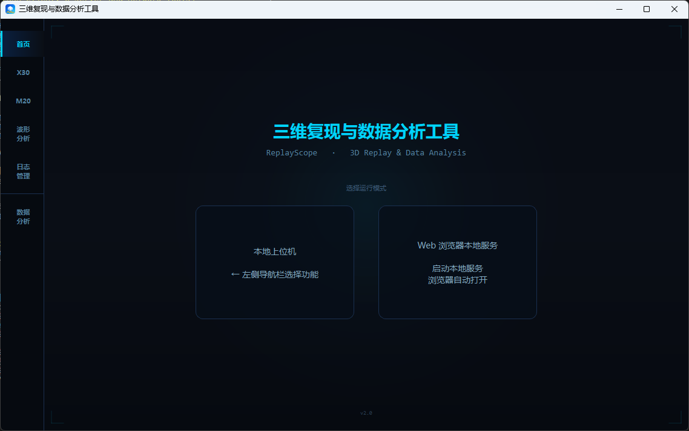
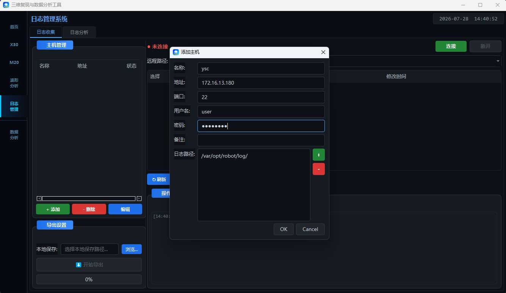
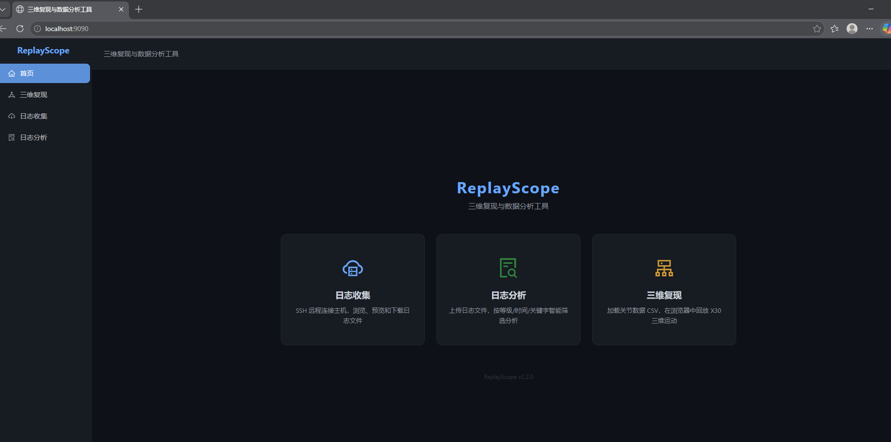
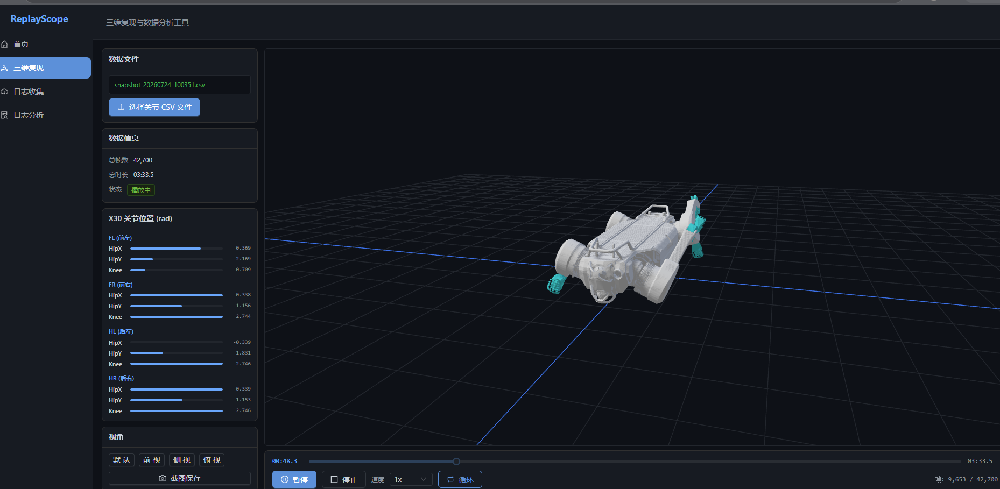
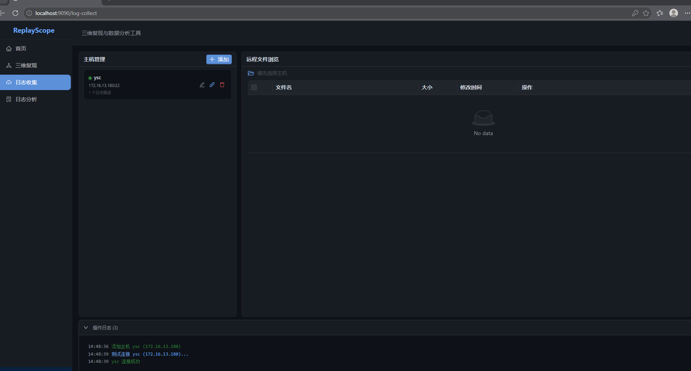
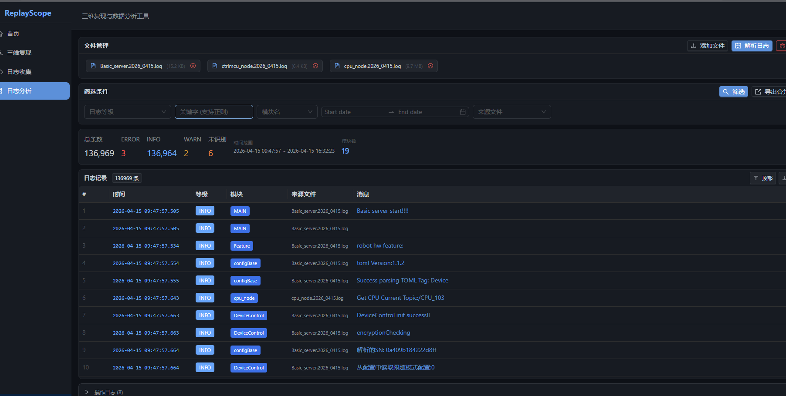

左：控制面板 中：三维画面 右上：关节位置 右下：系统日志 底部：播放控制条
用户操作手册 · RobotReplay v2.2.1
| 软件名称 | 机器人三维复现与数据分析工具（英文标识 RobotReplay） |
| 当前版本 | V2.2.1 |
| 对应软件包 | RobotReplay-2.2.1-x64-Setup.exe |
| 安装包校验 | SHA-256：0795D34D57C4B9780DCC948D86FED82C16686CFCFF6F207BBFEC2BDD902AF364 |
| 初版 | V2.0.0（2026-04-11） |
| 发布日期 | 2026-07-28 |
| 开发作者 | —— 请填写 —— |
| 所属单位 | DeepRobotics |
| 适用系统 | Windows 10 / 11（64 位） |
| 适用机型 | X30 四足机器狗、M20 轮足机器狗 |
| 版本 | 日期 | 安装包 | 主要变更 |
|---|---|---|---|
| V2.0.0 | 2026-04-11 | Player3DInstaller_v2.0.0.exe | 初版发布：X30 三维复现、数据分析、波形分析 |
| V2.1.0 | 2026-05-21 | 三维复现与数据分析工具_Setup_v2.1.0.exe | 新增 M20 机型支持、日志管理（收集 / 分析）、Web 服务 |
| V2.2.1 | 2026-07-28 | RobotReplay-2.2.1-x64-Setup.exe | 新增 Web 端三维复现、三维画面录像、地形图加载开关； CSV 加载速度提升约 4 倍；修复 M20 关节面板显示错位、 导出 PDF 内容不完整等问题；适配笔记本小屏 |
本工具面向四足机器狗售后与研发调试，核心用途是：把四足机器狗下位机记录下来的数据，还原成可以看、可以量的形态，从而判断四足机器狗当时的实际状态。 主要解决三类问题：
本工具由两套可独立使用的前端组成，共用同一批数据格式：
| 组成部分 | 技术实现 | 说明 |
|---|---|---|
| 本地上位机 | Qt 6（C++17） | 主界面程序，负责界面、播放控制、曲线绘制、日志分析 |
| 三维渲染服务 | Python + PyBullet | 后台独立进程，负责加载 URDF 模型、按帧驱动关节、GPU 渲染； 与上位机通过本机 TCP 通信，渲染画面直接嵌入到主界面中 |
| 日志采集服务 | Python + paramiko | 后台独立进程，负责 SSH 连接四足机器狗、浏览与下载日志文件 |
| Web 服务端 | Go + Gin | 本机 HTTP 服务（端口 9090），提供数据解析与静态资源 |
| Web 前端 | React + three.js | 浏览器界面；三维复现在浏览器端用 WebGL 渲染，不依赖 PyBullet |

程序启动后进入首页，左侧导航栏共 6 项功能：
| 导航项 | 作用 | 需要的数据 |
|---|---|---|
| 首页 | 选择运行模式：本地上位机 / Web 浏览器本地服务 | — |
| X30 | X30 四足机器狗三维运动复现，可叠加地形图 | 关节数据 CSV（可选：地形图 CSV） |
| M20 | M20 轮足机器狗三维运动复现 | 关节数据 CSV |
| 波形分析 | 自由选择任意数据列绘制波形，支持保存配置方案 | 快照 CSV |
| 日志管理 | 从四足机器狗采集日志（日志收集）+ 多文件合并检索（日志分析） | SSH 连接 / 本地 .log 文件 |
| 数据分析 | 按预设模板分六类查看姿态、关节、算法、性能、温度、状态曲线 | 快照 CSV |
RobotReplay-2.2.1-x64-Setup.exe，按提示允许管理员权限。C:\Program Files\RobotReplay，可改到其他磁盘）。双击桌面快捷方式启动，首页（图 2-1）提供两种运行模式：
用关节数据把 X30 当时的动作在三维场景中回放出来，可叠加地形图查看足端与地面的关系。
test-data\关节数据和地形图\snapshot_20261212_195732.csvtest-data\关节数据和地形图\gridmap_20261212_195732.csv| 控件 | 作用 |
|---|---|
| ▶ 播放 / ⏸ 暂停 | 开始播放；播放中按钮变为「暂停」，再次点击可继续 |
| ■ 停止 | 停止播放并回到第 0 帧 |
| 速度 0.5x / 1x / 1.5x / 2x | 调整回放速度，当前档位高亮显示 |
| ↻ 循环 | 开启后播放到末尾自动从头开始（默认开启） |
| 进度条 | 拖动可跳转到任意时刻；两端显示当前时间与总时长， 右下角显示「帧：当前 / 总数」 |
| 按键 | 功能 |
|---|---|
| 空格 | 播放 / 暂停 |
| Esc | 停止 |
| ← / → | 后退 / 前进 20 帧（按住 Shift 为 100 帧） |
| , / . | 逐帧后退 / 前进 |
| [ / ] | 降低 / 提高播放速度 |
X30_20260728_143052.avi），
按钮变为「■ 停止录制」并显示已录时长。再次点击结束录制，系统日志中会显示保存路径与帧数。
操作方式与 X30 完全一致（选择 CSV → 播放），差异如下：
| 项目 | X30 | M20 |
|---|---|---|
| 机型 | 四足 | 轮足（每条腿末端为驱动轮） |
| 关节面板 | 每腿 3 个关节：HipX / HipY / Knee | 每腿 4 个关节：HipX / HipY / Knee / Wheel |
| 地形图 | 支持 | 暂不支持（页面上的地形图按钮对 M20 不生效） |
按预设模板分六类查看四足机器狗的关键信号曲线，是日常巡检的主要入口。
test-data\数据分析\JY-L3-030 2025-08-20 10-36.snapshot.csv
| 页签 | 图表内容 | 左侧可调项 |
|---|---|---|
| 姿态 | RPY1、RPY2、足底力 | 为 RPY1 / RPY2 各自选择「类型」（Angle 角度 / A_vel 角速度 / Acc 加速度） 与「轴」（Roll / Pitch / Yaw 或 X / Y / Z） |
| 关节 | 关节角度、关节速度、关节力矩 每图含「实际」与「期望」两条曲线 |
选择腿（FL / FR / HL / HR）与关节（HipX / HipY / Knee） |
| 算法 | Scope 1 ~ 3，每图两条自定义曲线 | 为每条曲线指定 Scope 通道编号 |
| 性能 | 执行时间、周期时间、CPU 占用率 | 固定映射，无需配置 |
| 温度 | 驱动电压、驱动器温度、电机温度 每图含四条腿曲线 |
选择关节（HipX / HipY / Knee） |
| 状态 | ECAT 周期（平均 / 最大 / 最小）、设备周期 | 固定映射，无需配置 |
| 操作 | 效果 |
|---|---|
| 鼠标悬停在曲线上 | 显示该点的时间与数值，并出现竖直参考线 |
| 右键按住拖动 | 框选一段时间区间，松开后所有图表同步放大到该区间 |
| 点击右侧图例 | 显示 / 隐藏对应曲线 |
| 底部「起始时间」「窗口宽度」 | 精确设定显示的时间范围（单位：秒） |
| 底部 A / B 双滑块 | 拖动两端手柄快速调整时间窗口，滑块上方显示对应时刻 |
| 「自适应」按钮 | 纵轴恢复为自动缩放，完整显示全部数据 |
| 「导出当前图表」 | 将当前页签的全部图表拼接导出为 PNG / JPG / PDF |
不受模板限制，可任选数据列组合成图窗，适合针对某个具体问题做专项分析。

11. Roll_Vel (rad/s)）。图表交互（悬停读数、右键框选缩放、底部时间窗口、自适应）与第 6.3 节完全一致。
方案文件保存在程序安装目录下的 wave_configs 文件夹中，可随程序一起备份或分发给同事。
通过 SSH 连接到四足机器狗（或日志服务器），浏览、预览并批量下载日志文件。

| 字段 | 说明 | 测试服务器填法 |
|---|---|---|
| 名称 | 自定义备注名，便于识别 | ysc |
| 地址 | 四足机器狗或服务器 IP | 172.16.13.180 |
| 端口 | SSH 端口，一般为 22 | 22 |
| 用户名 | 登录账号 | ysc |
| 密码 | 登录密码 | ysc@2026 |
| 备注 | 可选说明 | 可留空 |
| 日志路径 | 远程日志目录。每行一条，可用右侧「+」增加、「-」删除， 连接后可在顶部下拉框中切换 | /home/ysc/zhangchao/log_data四足机器狗本体默认路径为 /var/opt/robot/log/ |
ssh_configs\hosts.json 中。
请勿在公用电脑上保存生产环境四足机器狗的登录密码。

SN_板号_构型_版本_时间.zip/var/opt/robot/conf/MFI.toml）、
版本与构型（/var/opt/robot/release_note.json），并执行 ifconfig eth0 获取板号。读取 MFI.toml 失败 之类的 WARN 提示，对应字段以 unknown 代替，
文件名形如 unknown_unknown_unknown_unknown_20260728_144303.zip
（见图 8-2）。这不影响文件的正常下载与打包。
把多个日志文件按时间戳合并成一条完整时间线，再按条件筛选检索。
本模块解析四足机器狗标准日志格式：
[2026-04-15 09:47:57.431.797] [INFO ] [StateMachine] start logging!!!
[2026-04-15 09:47:57.480.706] [ERROR ] [EncryptionCheck] 读取授权码文件失败
[2026-04-15 09:48:07.840.026] [INFO ] [lio] LIO version: 1.0.13即 [时间戳] [等级] [模块] 日志内容 四段结构。
.log 文件，
或点击「➕ 添加文件夹」批量导入整个目录。左侧列表显示文件名、修改时间与大小。
| 功能 | 说明 |
|---|---|
| 结果表格 | 按时间顺序显示：序号、时间戳、等级、进程/模块、来源文件、日志消息。 ERROR 行标红，WARN 行标黄，便于一眼定位 |
| 搜索 | 底部输入关键字，「▼ 下一个」/「▲ 上一个」逐条跳转并高亮， 搜完一轮会提示「[已循环]」 |
| 时间轴播放 | 「◀◀ 前帧」/「▶ 播放」/「后帧 ▶▶」 按日志真实时间间隔逐条推进，速度可选（0.5x ~ 最快）； 下方滑块显示当前时刻在整段日志中的位置，便于观察事件发生的先后节奏 |
| ℹ 统计信息 | 按等级统计条数、按模块统计 Top 20、显示时间范围 |
| ↓ 导出结果 | 把当前筛选结果导出为单个 .log 文件 |
| ✗ 清空结果 | 清除分析结果，重新开始 |
除本地上位机外，本工具还提供浏览器界面，操作更轻量，也便于在同一局域网内的其他电脑上查看。
http://localhost:9090。
Web 端左侧共 4 个菜单：
| 菜单 | 功能 | 与桌面端的差异 |
|---|---|---|
| 首页 | 功能入口导航 | — |
| 三维复现 | X30 三维运动回放 | 在浏览器中用 WebGL 渲染，不依赖 PyBullet；暂不支持地形图、录像与 M20 |
| 日志收集 | SSH 连接、浏览、下载日志 | 操作流程与桌面端一致 |
| 日志分析 | 导入日志文件后合并筛选 | 额外提供统计卡片，一眼看到各等级条数 |


.log 文件，可多选；
已添加的文件以标签形式列出（带大小），点标签上的 ✕ 可移除。
随附的 test-data 目录包含两类样例数据：
| 文件 | 大小 | 用途 |
|---|---|---|
关节数据和地形图\snapshot_20261212_195732.csv |
29.1 MB | X30 / M20 三维复现的关节数据 |
关节数据和地形图\gridmap_20261212_195732.csv |
7.0 MB | X30 三维复现的地形图数据 |
数据分析\JY-L3-030 2025-08-20 10-36.snapshot.csv |
121.9 MB | 数据分析与波形分析用的快照数据 |
数据分析\JY-L3-030 2025-08-20 10-36.csv |
190.5 MB | 同上，数据量更大的完整记录 |
必须包含以下列，缺任意一项都无法回放：
| 关节角度 | Joint Pos 0 ~ Joint Pos 11，共 12 列，单位弧度顺序为 FL、FR、HL、HR 四条腿，每腿依次 HipX、HipY、Knee |
| 机身姿态 | IMU roll、IMU pitch、IMU yaw，单位度 |
| 关节力矩 | Joint Tor 2、5、8、11（膝关节），
用于小腿着色；缺失时不着色，不影响回放 |
采样率按 200 Hz 处理（每帧 5 毫秒）。
支持两种格式，程序自动识别：
Alg_Period (us) 反算真实采样率。每行 1 个时间戳 + 693 个高度值（21 行 × 33 列网格），无表头。 地形图的帧数与关节数据可以不同，播放时按时间对齐。
| 现象 | 原因与处理 |
|---|---|
| 点击 X30 后中间区域长时间空白 | 三维渲染引擎首次启动需要数秒加载模型。若超过 30 秒仍无画面， 请查看右侧「系统日志」的报错信息 |
| 加载 CSV 后无法播放 | 所选 CSV 缺少必需的列（见 11.2）。请确认选择的是关节数据文件， 而非用于波形分析的快照数据 |
| 播放时地形图没有出现 | 确认已勾选「播放时加载地形图」且已选择地形图文件； 文件框显示「已选择(未启用)」即表示当前未勾选。查看系统日志中的提示信息 |
| 某个图表一直空白 | 该 CSV 未记录对应信号，左侧会提示「暂无数据」，属正常情况 |
| 笔记本上界面显示不全 | 左侧控制面板可上下滚动；「数据分析」窗口会自动适配屏幕高度。 建议使用 1920×1080 及以上分辨率以获得最佳体验 |
| SSH 连接失败 | 检查 IP、端口、用户名、密码是否正确，以及本机与四足机器狗是否在同一网络； 操作日志中会显示具体错误原因 |
| 导出的 ZIP 名字全是 unknown | 连接的不是四足机器狗本体，读不到 SN / 版本 / 构型信息。文件内容正常，可直接使用 |
| 日志分析结果为空 | 检查「时间范围」是否覆盖日志实际时间；检查等级复选框是否被全部取消勾选 |
| Web 页面打不开 | 确认端口 9090 未被其他程序占用；可在浏览器手动访问
http://localhost:9090 |
| 录像文件很大 | 30fps 下约 45 MB/分钟属正常。建议只录制关键片段 |
| 路径（相对安装目录） | 内容 |
|---|---|
Player3D.exe | 上位机主程序 |
x30PybusSimlu\、M20pybusSimlu\ | X30 / M20 三维渲染服务及模型资源 |
roboscope-web\ | Web 服务端与前端资源 |
ssh_configs\hosts.json | 日志收集的主机配置（含密码，明文） |
wave_configs\ | 波形分析保存的配置方案 |
机器人三维复现与数据分析工具（RobotReplay）V2.2.1 · DeepRobotics · 2026-07-28